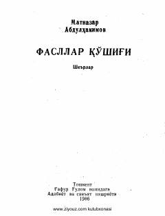

FQTabiat va insoniy tuyg'ular tarannum etilgan she'rlar to'plami.
Mazkur to'plamga shoir Matnazar Abdulhakimning turli yillarda bitilgan sara she'rlari kiritilgan bo'lib, ularda hayot, tabiat va insoniy tuyg'ular tarannum etilgan. Shoirning she'rlari o'zining tinik falsafiy fikrlari hamda ajoyib ohanglari bilan ajralib turadi.